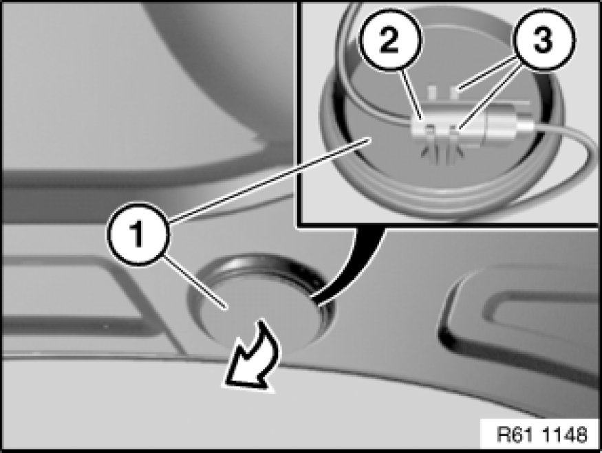
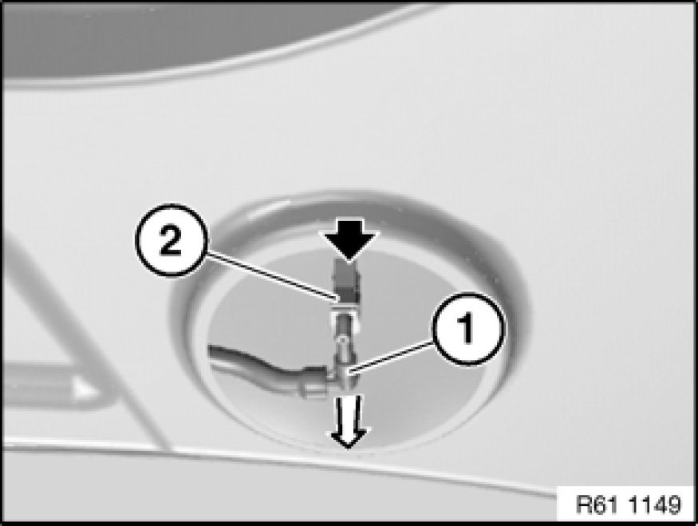

Removing and Installing/Replacing a Jet Nozzle in Windshield Washer System
61 71 015 - Removing and installing/replacing a jet nozzle in windshield washer system

Note:
The jet nozzles of the windshield washer system are preset at the factory and cannot be readjusted.

Lever out sealing plug (1) in direction of arrow.
Unclip, unlock and disconnect plug connection (2) behind.
Installation:
Make sure plug connection (2) is correctly seated in mounting (3).
Ensure correct installation position (mounting (3) at top) and correct seating of sealing plug (1).

Detach connector (1) in direction of arrow from nozzle of windshield washer system (2).
Unlock spray nozzle (2), press out through opening and remove.
Installation:
Make sure nozzle of windshield washer system (2) is correctly seated.
Ensure hose is laid without kinks.